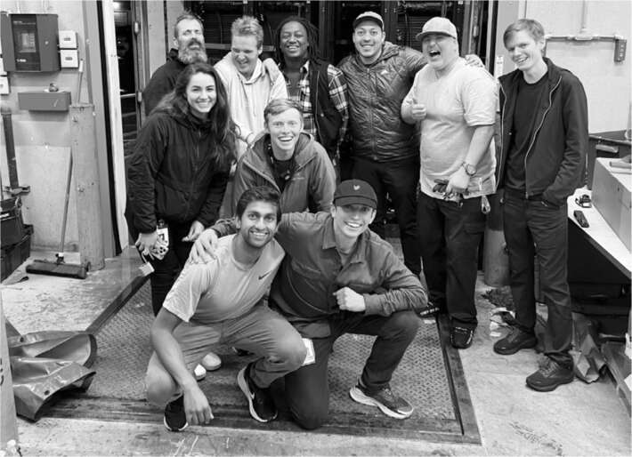
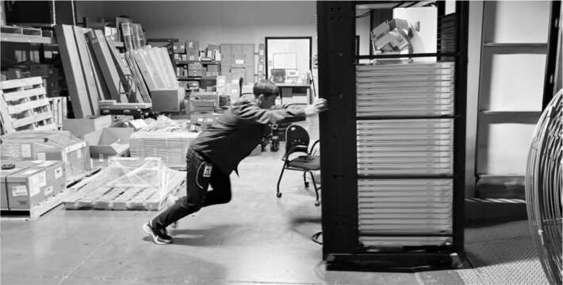

Biểu tượng cảm xúc đầu nổ tung
"Thời hạn này có vẻ như là điều tôi có thể chấp nhận được không?", Musk hỏi. "Rõ ràng là không. Nếu thời hạn dài, thì nó sai."
Đã khuya ngày 22 tháng 12, và cuộc họp trong phòng họp tầng mười của Musk tại Twitter trở nên căng thẳng. Ông đang nói chuyện với hai quản lý cơ sở hạ tầng của Twitter, những người trước đây chưa từng làm việc nhiều với ông, và chắc chắn là chưa từng khi ông đang trong tâm trạng tồi tệ.
Một trong số họ cố gắng giải thích vấn đề. Công ty dịch vụ dữ liệu đặt một trong những trang trại máy chủ của Twitter, tại Sacramento, đã đồng ý cho họ gia hạn hợp đồng ngắn hạn để họ có thể bắt đầu di dời trong năm 2023 một cách có trật tự. "Nhưng sáng nay", người quản lý lo lắng nói với Musk, "họ đã quay lại và nói rằng kế hoạch đó không còn khả thi nữa vì, và đây là lời của họ, họ không nghĩ rằng chúng ta sẽ ổn định về mặt tài chính."
Cơ sở này đang tiêu tốn của Twitter hơn 100 triệu đô la mỗi năm. Musk muốn tiết kiệm số tiền đó bằng cách chuyển các máy chủ đến một trong những cơ sở khác của Twitter, ở Portland, Oregon. Một quản lý khác tại cuộc họp cho biết điều đó không thể được thực hiện ngay lập tức. "Chúng tôi không thể di dời an toàn trước sáu đến chín tháng", cô nói với giọng điệu bình tĩnh. "Sacramento vẫn cần hoạt động để phục vụ lưu lượng truy cập."
Trong nhiều năm, Musk đã nhiều lần phải đối mặt với lựa chọn giữa những gì ông cho là cần thiết và những gì người khác nói với ông là khả thi. Kết quả gần như luôn giống nhau. Ông im lặng trong giây lát, rồi tuyên bố, "Các anh có chín mươi ngày để làm việc đó. Nếu không thể hoàn thành, đơn từ chức của các anh sẽ được chấp nhận."
Người quản lý bắt đầu giải thích chi tiết một số trở ngại khi di dời máy chủ đến Portland. "Mật độ tủ rack khác nhau, mật độ điện năng cũng khác," cô nói. "Vì vậy, các phòng cần được nâng cấp." Cô bắt đầu cung cấp thêm nhiều chi tiết, nhưng sau một phút, Musk ngắt lời.
"Điều này làm tôi đau đầu," anh nói.
"Tôi xin lỗi, đó không phải là ý định của tôi," cô đáp bằng giọng đều đều.
"Cô có biết biểu tượng cảm xúc đầu nổ tung không?" anh hỏi cô. "Đó là cảm giác của tôi lúc này. Thật là một đống nhảm nhí. Chúa ơi. Portland rõ ràng có rất nhiều chỗ. Việc di chuyển máy chủ từ nơi này sang nơi khác thật đơn giản."
Các quản lý của Twitter lại cố gắng giải thích các hạn chế. Musk ngắt lời. "Các anh chị có thể cử người đến trung tâm máy chủ của chúng ta và gửi cho tôi video bên trong không?" anh hỏi. Lúc đó là ba ngày trước Giáng sinh, và người quản lý hứa sẽ gửi video trong một tuần. "Không, ngày mai," Musk ra lệnh. "Tôi đã tự mình xây dựng các trung tâm máy chủ, và tôi có thể biết liệu các anh chị có thể đặt thêm máy chủ ở đó hay không. Đó là lý do tại sao tôi hỏi liệu các anh chị đã thực sự đến thăm các cơ sở này chưa. Nếu chưa, các anh chị chỉ đang nói nhảm."
SpaceX và Tesla thành công vì Musk không ngừng thúc đẩy các nhóm của mình phải năng động hơn, linh hoạt hơn và thực hiện các đợt tăng tốc thần tốc để loại bỏ mọi trở ngại. Đó là cách họ đã chắp vá một dây chuyền sản xuất ô tô trong một cái lều ở Fremont, một cơ sở thử nghiệm ở sa mạc Texas và một bãi phóng tại Cape Canaveral làm từ các bộ phận đã qua sử dụng. "Tất cả những gì các anh chị cần làm là di chuyển máy chủ đến Portland," anh nói. "Nếu mất hơn ba mươi ngày, tôi sẽ rất ngạc nhiên." Anh dừng lại và tính toán lại. "Chỉ cần thuê một công ty vận chuyển, và sẽ mất một tuần để di chuyển máy tính và một tuần nữa để cắm chúng vào. Hai tuần. Đó là những gì nên xảy ra." Mọi người im lặng. Nhưng Musk vẫn đang hăng say. "Nếu các anh chị có một chiếc xe tải U-Haul, có lẽ các anh chị có thể tự làm điều đó." Hai quản lý của Twitter nhìn nhau xem liệu anh có nghiêm túc không. Steve Davis và Omead Afshar cũng có mặt tại bàn. Họ đã thấy anh như thế này nhiều lần trước đây, và họ biết rằng anh có thể nghiêm túc.
Cuộc đột kích Sacramento
"Tại sao chúng ta không làm ngay bây giờ?" James Musk hỏi.
Anh và em trai Andrew đang bay cùng Elon từ San Francisco đến Austin vào tối thứ Sáu, ngày 23 tháng 12, một ngày sau cuộc họp gây khó chịu về cơ sở hạ tầng về việc sẽ mất bao lâu để di chuyển máy chủ ra khỏi cơ sở Sacramento. Là những người đam mê trượt tuyết, họ đã lên kế hoạch tự mình đến Tahoe vào dịp Giáng sinh, nhưng hôm đó Elon đã mời họ đến Austin. James miễn cưỡng. Anh ấy kiệt sức về tinh thần và không cần thêm căng thẳng, nhưng Andrew đã thuyết phục anh ấy rằng họ nên đi. Vì vậy, đó là cách họ lên máy bay—cùng với Musk, Grimes và X, cùng với Steve Davis và Nicole Hollander và con của họ—nghe Elon phàn nàn về các máy chủ.
Họ đang ở đâu đó trên Las Vegas khi James đề nghị rằng họ có thể di chuyển chúng ngay bây giờ. Đó là kiểu ý tưởng bốc đồng, phi thực tế, xông pha mà Musk yêu thích. Trời đã tối muộn, nhưng anh ta bảo phi công chuyển hướng, và họ quay trở lại Sacramento.
Chiếc xe thuê duy nhất họ có thể tìm thấy khi hạ cánh là một chiếc Toyota Corolla. Vệ sĩ trưởng của Musk lái xe, Grimes ngồi trên đùi Elon ở ghế phụ, và những người khác chen chúc ở phía sau. Họ không chắc làm thế nào để vào được trung tâm dữ liệu vào ban đêm, nhưng một nhân viên Twitter rất ngạc nhiên, một anh chàng tên Alex đến từ Uzbekistan, vẫn ở đó. Anh vui vẻ cho họ vào và dẫn họ đi tham quan.
Trung tâm dữ liệu, nơi đặt máy chủ cho nhiều công ty khác, được bảo mật rất nghiêm ngặt, với yêu cầu quét võng mạc để vào mỗi kho chứa. Alex người Uzbekistan đã đưa họ vào kho của Twitter, chứa khoảng 5200 tủ máy chủ cỡ tủ lạnh, mỗi tủ có 30 máy tính. "Chuyển mấy cái này có vẻ không khó lắm", Elon tuyên bố. Đó là một nhận định phi thực tế, vì mỗi tủ nặng khoảng 1100 kg và cao 2,4 mét.
"Ông cần thuê nhà thầu để nâng các tấm sàn", Alex nói. "Họ cần dùng giác hút để nâng". Anh ta cho biết, một nhóm thầu khác sẽ phải chui xuống dưới các tấm sàn để ngắt cáp điện và thanh chống địa chấn.
Musk quay sang nhân viên bảo vệ và mượn dao bỏ túi. Anh ta dùng dao nâng một lỗ thông gió trên sàn, rồi cạy mở các tấm sàn. Sau đó, anh tự mình chui xuống dưới sàn máy chủ, dùng dao mở tủ điện, rút phích cắm máy chủ và chờ xem điều gì xảy ra. Không có gì nổ tung. Máy chủ đã sẵn sàng để di chuyển. "Chà, có vẻ không quá khó", anh nói trong khi Alex người Uzbekistan và những người còn lại nhìn chằm chằm. Lúc này Musk hoàn toàn phấn khích. Anh ta cười lớn nói rằng, giống như phiên bản làm lại của Mission: Impossible, bản Sacramento.
Ngày hôm sau - đêm Giáng sinh - Musk gọi thêm người hỗ trợ. Ross Nordeen lái xe từ San Francisco. Anh ghé Apple Store ở Union Square và chi 2.000 đô la để mua toàn bộ AirTag còn trong kho để có thể theo dõi máy chủ trên đường vận chuyển, sau đó ghé Home Depot, nơi anh chi 2.500 đô la cho cờ lê, kìm cộng lực, đèn đội đầu và các dụng cụ cần thiết để tháo bu lông chống địa chấn. Steve Davis nhờ người của The Boring Company kiếm một xe tải kéo và sắp xếp xe tải chuyển đồ. Những người khác từ SpaceX cũng đến.
Các tủ máy chủ có bánh xe, vì vậy nhóm đã ngắt kết nối bốn tủ và đẩy chúng lên xe tải đang đợi. Điều này cho thấy tất cả khoảng 5200 tủ có thể được di chuyển trong vài ngày. "Mọi người làm tốt lắm!", Musk hân hoan.
Những nhân viên khác tại cơ sở quan sát với sự ngạc nhiên lẫn kinh hãi. Musk và nhóm của anh đang đẩy máy chủ ra ngoài mà không đóng thùng hoặc bọc vật liệu bảo vệ, sau đó dùng dây đai mua ở cửa hàng để cố định chúng trên xe tải. "Tôi chưa bao giờ chất hàng lên xe tải kéo", James thừa nhận. Ross gọi đó là "kinh khủng". Giống như dọn dẹp tủ quần áo, "nhưng đồ đạc bên trong cực kỳ quan trọng".
Lúc 3 giờ chiều, sau khi họ đưa được bốn máy chủ lên xe tải, tin tức về vụ việc đã đến tai các giám đốc điều hành cấp cao của NTT, công ty sở hữu và quản lý trung tâm dữ liệu. Họ ra lệnh cho nhóm của Musk dừng lại. Musk vừa hả hê vừa tức giận, cảm xúc thường đi kèm với những cơn hưng phấn của anh. Anh gọi cho CEO của bộ phận lưu trữ, người nói với anh rằng không thể di chuyển tủ máy chủ mà không có một nhóm chuyên gia. "Vớ vẩn", Musk giải thích. "Chúng tôi đã chất được bốn cái lên xe tải rồi". Vị CEO sau đó nói với anh rằng một số sàn nhà không thể chịu được áp lực hơn 225 kg, vì vậy việc di chuyển máy chủ nặng gần 1 tấn sẽ gây hư hỏng. Musk trả lời rằng các máy chủ có bốn bánh xe, vì vậy áp lực tại bất kỳ điểm nào cũng chỉ là 225 kg. "Ông ta tính toán kém quá", Musk nói với nhóm của mình.
Sau khi phá hỏng đêm Giáng sinh của các quản lý NTT, cùng với nguy cơ mất hơn 100 triệu đô la doanh thu cho năm tới, Musk tỏ ra thương xót và nói rằng ông sẽ tạm dừng việc di chuyển máy chủ trong hai ngày. Nhưng ông cảnh báo, việc di chuyển sẽ tiếp tục vào ngày sau lễ Giáng sinh.
Giáng sinh gia đình
Đêm Giáng sinh muộn, với lệnh ngừng bắn tạm thời tại trung tâm dữ liệu Sacramento, Musk đã mời James và Andrew, những người đã phải hủy bỏ kế hoạch trượt tuyết của mình, đến Boulder để đón Giáng sinh cùng Kimbal và gia đình. Christiana vội vàng mua quà và chuẩn bị tất cho hai vị khách không mời mà đến. Kimbal nấu thịt bò nướng và bánh pudding Yorkshire cao ngất. Con trai của Elon, Damian, cũng là một đầu bếp tài ba, đã làm một món ăn từ khoai lang. X chơi với một tên lửa bơm hơi, vừa hô to đếm ngược, vừa dậm chân lên nút bấm để phóng nó. James và Andrew thư giãn trong bồn nước nóng.
Chuyến thăm là cơ hội để Kimbal có một cuộc trò chuyện nghiêm túc với em trai mình về việc, kể từ thương vụ Twitter, Elon đã mất kiểm soát như thế nào. Một năm trước, anh ấy là Nhân vật của năm và là người giàu nhất thế giới, và giờ thì không còn nữa. Nó giống như những gì đã xảy ra vào năm 2018, và đã đến lúc cần một lời cảnh báo thẳng thắn khác. Em đang tạo ra kẻ thù với tốc độ chóng mặt và ở mức độ nguy hiểm, Kimbal nói với anh. "Nó giống như những ngày học cấp ba, khi em liên tục bị đánh đập."
Kimbal thậm chí còn đề cập đến việc liệu Elon có muốn tiếp tục làm CEO của Tesla hay không. Công ty đang gặp khó khăn nghiêm trọng, và anh ấy không tập trung vào nó. "Sao em không từ bỏ chức CEO?", Kimbal hỏi. Elon chưa sẵn sàng trả lời câu hỏi đó.
Cũng có vấn đề về việc anh ấy đăng tweet vào đêm khuya. Kimbal đã ngừng theo dõi Elon trên Twitter vì nó quá căng thẳng. Elon thừa nhận rằng tweet về Paul Pelosi là một sai lầm. Anh ấy đã không nhận ra rằng câu chuyện anh ấy thấy trên mạng về một nam gái mại dâm là từ một trang web không đáng tin cậy. "Em đúng là đồ ngốc," Kimbal nói. "Đừng tin vào những thứ vớ vẩn nữa." Điều tương tự cũng đúng với tweet của anh ấy về Fauci. "Không ổn đâu. Nó chẳng buồn cười chút nào. Em không thể làm những chuyện như vậy." Kimbal cũng lên lớp James và Andrew vì đã tiếp tay cho anh. "Điều này không ổn, các chàng trai. Không ổn chút nào."
Một chủ đề mà họ không thảo luận là công ty Twitter. Khi Elon đề cập đến nó, Kimbal từ chối nói về nó. "Tôi thực sự không quan tâm đến Twitter," anh nói. "Nó chỉ là một cái mụn nhỏ trên cái mông của thứ đáng lẽ phải là ảnh hưởng của em đối với thế giới." Elon không đồng ý, nhưng họ không tranh luận về điều đó.
Một truyền thống Giáng sinh mà Kimbal và Christiana có là yêu cầu mọi người suy ngẫm về một câu hỏi. Năm nay, đó là "Bạn có điều gì hối tiếc không?" "Điều hối tiếc lớn nhất của tôi," Elon trả lời, "là tôi thường xuyên tự đâm vào đùi bằng dĩa, tự bắn vào chân và đâm vào mắt mình."
Giáng sinh đã cho Musk cơ hội kết nối lại với các con trai Griffin, Damian và Kai, những người đã xa cách anh trong suốt thời gian hỗn loạn do Twitter và các tweet của anh gây ra. Giống như James và Andrew, họ được ban tặng khả năng vượt trội về toán học và khoa học, nhưng không có những con quỷ và sự khắc nghiệt của cha và ông nội họ. Làm con trai của Elon Musk là một điều khó khăn, nhưng họ là những "người khắc kỷ", như Musk gọi họ.
Anh ấy đã thảo luận với Kai, khi đó mười sáu tuổi, về khả năng rời trường trung học và đến làm việc tại Twitter. "Nó là một lập trình viên xuất sắc, vì vậy nó có thể viết phần mềm và học trung học trực tuyến, đó là những gì Damian đã làm," Musk nói. "Tôi không thúc ép, vì tôi biết có một yếu tố xã hội ở trường học, nhưng nó quá thông minh so với trường trung học. Nó thật nực cười." Kai nói rằng nó sẽ suy nghĩ về điều đó.
Damian, anh em sinh đôi của Kai, cũng thông minh không kém nhưng lại có những sở thích khác biệt. Hơn một năm qua, cậu đã nghiên cứu về điện toán lượng tử và mật mã tại phòng thí nghiệm của một nhà vật lý hạt. Sau khi hoàn thành chương trình phổ thông trực tuyến, Damian được nhận vào một trong những trường đại học nghiên cứu hàng đầu quốc gia, nhưng Musk cho rằng môi trường học thuật ở đó có thể chưa đủ thử thách với cậu. "Con trai tôi đã đạt trình độ cao học về toán và vật lý rồi."
Griffin là người hướng ngoại và dễ gần nhất trong gia đình Musk. Là sinh viên năm nhất tại một trường đại học thuộc Ivy League, cậu đang phải đối mặt với những ác cảm nhắm vào cha mình. Khi nói về bản thân, Griffin rất khiêm tốn và lễ phép, nhưng cậu cũng chia sẻ, gần như là đang xin lỗi, "Tôi xin lỗi nếu điều này nghe có vẻ hơi khoe khoang, nhưng tôi đứng đầu lớp khoa học máy tính với 450 sinh viên." Cậu dành nhiều thời gian, giống như cha mình thời niên thiếu, để lập trình trò chơi điện tử. Trò chơi yêu thích của cậu là Elden Ring.
Jenna, người từng được biết đến với cái tên Xavier, tất nhiên không có mặt ở đó. Nhưng Christiana đã nhắn tin cho cô, nói rằng cả nhà đều nhớ cô và gửi tặng cô chiếc tất Giáng sinh tự tay làm. "Cảm ơn chị," Jenna trả lời. "Điều này có ý nghĩa rất lớn đối với em."
Còn Saxon, người mắc chứng tự kỷ, lại một lần nữa thể hiện sự thông thái của mình. Có lúc cả nhà đang bàn luận về việc cần sử dụng biệt danh khi đi nhà hàng. "Ồ, vâng," cậu nói. "Nếu ai phát hiện ra cháu là con trai của Elon Musk, họ sẽ giận cháu vì ông ấy đang phá hỏng Twitter."
Việc di dời tiếp tục
Sau Giáng sinh, Andrew và James quay trở lại Sacramento để xem họ có thể di chuyển thêm bao nhiêu máy chủ nữa. Vì không mang đủ quần áo, họ đã đến Walmart mua quần jean và áo phông.
Các giám sát viên của NTT quản lý cơ sở tiếp tục gây khó dễ, một số điều hoàn toàn dễ hiểu. Ví dụ, thay vì để họ mở cửa kho, họ yêu cầu nhóm của Andrew và James phải quét võng mạc mỗi khi vào. Một trong những giám sát viên luôn theo dõi họ. "Cô ấy là người khó chịu nhất mà tôi từng làm việc cùng," James nói. "Nhưng công bằng mà nói, tôi có thể hiểu được vì sao cô ấy làm vậy, bởi vì chúng tôi đang phá hỏng kỳ nghỉ lễ của cô ấy, phải không?"
Các nhà thầu vận chuyển mà NTT muốn họ sử dụng tính phí 200 đô la một giờ. Vì vậy, James đã tìm trên Yelp và thấy một công ty tên là Extra Care Movers sẵn sàng làm việc với giá rẻ hơn mười lần. Công ty nhỏ bé này đã đẩy lý tưởng tiết kiệm lên đến giới hạn. Chủ sở hữu từng sống lang thang một thời gian, sau đó có con và đang cố gắng thay đổi cuộc đời. Ông ta không có tài khoản ngân hàng, vì vậy James phải dùng PayPal để thanh toán. Ngày thứ hai, nhóm nhân viên muốn tiền mặt, nên James đã đến ngân hàng và rút 13.000 đô la từ tài khoản cá nhân. Hai thành viên trong nhóm không có giấy tờ tùy thân, khiến họ khó đăng ký vào cơ sở. Nhưng họ đã bù đắp bằng sự hối hả. "Các bạn sẽ được một đô la tiền boa cho mỗi máy chủ bổ sung mà chúng ta di chuyển được," James thông báo. Từ đó, mỗi khi đưa được một máy chủ mới lên xe tải, các công nhân lại hỏi họ đã chuyển được bao nhiêu cái rồi.
Các máy chủ chứa dữ liệu người dùng, và ban đầu James không nhận ra rằng, vì lý do bảo mật, chúng cần được xóa sạch trước khi di chuyển. "Khi chúng tôi biết được điều này thì máy chủ đã được rút phích cắm và chuyển đi, nên không thể nào đưa chúng trở lại, cắm điện và xóa dữ liệu", anh nói. Thêm vào đó, phần mềm xóa dữ liệu cũng không hoạt động. "Chết tiệt, giờ phải làm sao?", anh tự hỏi. Elon đề nghị khóa xe tải và theo dõi chúng. Vậy nên James cử người đến Home Depot mua khóa lớn, và họ gửi mã số khóa trong bảng tính đến Portland để mở khóa xe tải khi đến nơi. "Thật không thể tin được là nó đã hiệu quả", James nói. "Tất cả đều đến Portland an toàn."
Cuối tuần đó, họ đã dùng hết xe tải ở Sacramento. Mặc dù khu vực này đang bị mưa xối xả, họ đã di chuyển được hơn bảy trăm tủ máy chủ chỉ trong ba ngày. Kỷ lục trước đó tại cơ sở này là di chuyển ba mươi tủ trong một tháng. Vẫn còn rất nhiều máy chủ ở cơ sở, nhưng nhóm "ba chàng lính ngự" đã chứng minh rằng chúng có thể được di chuyển nhanh chóng. Số còn lại được đội ngũ cơ sở hạ tầng của Twitter xử lý vào tháng Giêng.
Elon đã hứa thưởng lớn cho James, lên đến 1 triệu đô la, nếu anh di chuyển được máy chủ trước cuối năm. Không có gì được ghi thành văn bản, nhưng James tin tưởng người anh họ của mình. Sau khi di chuyển, anh nghe Jared Birchall nói rằng thỏa thuận chỉ áp dụng cho số lượng máy chủ hoạt động được ở Portland. Vì chúng cần kết nối điện mới, nên con số đó là không. James nhắn tin cho Elon, và Elon đề nghị trả 1.000 đô la cho mỗi máy chủ đến Portland an toàn, dù có được cắm điện hay không. Tổng số tiền là hơn 700.000 đô la. Elon cũng đề nghị anh một gói quyền chọn cổ phiếu để gia nhập Twitter. James đồng ý cả hai.
James rất yêu gia đình ở Nam Phi. Vì đã bỏ lỡ cơ hội đón Giáng sinh cùng họ, anh dự định dùng một phần tiền thưởng để mua vé máy bay cho họ sang Mỹ vào mùa xuân. Anh cũng đang tiết kiệm để mua nhà cho bố mẹ ở California. "Bố tôi rất thích làm đồ gỗ, nhưng ông vừa bị đứt một phần ngón tay và đang trải qua khoảng thời gian khó khăn", James nói. "Tôi rất thân với bố."
Tất cả đều rất thú vị và truyền cảm hứng, phải không? Một ví dụ về cách tiếp cận táo bạo và quyết liệt của Musk! Nhưng như mọi thứ liên quan đến Musk, than ôi, nó không đơn giản như vậy. Đó cũng là một ví dụ về sự liều lĩnh, sự thiếu kiên nhẫn với những ý kiến phản đối và cách ông ta gây áp lực lên mọi người. Các kỹ sư cơ sở hạ tầng của Twitter đã cố gắng giải thích cho ông, trong cuộc họp một tuần trước đó, tại sao việc đóng cửa nhanh chóng trung tâm Sacramento sẽ là một vấn đề, nhưng ông đã gạt bỏ họ. Ông có một lịch sử thành công khi biết lúc nào nên bỏ qua những lời chỉ trích. Nhưng không phải lúc nào cũng vậy. Trong hai tháng tiếp theo, Twitter đã bị mất ổn định. Việc thiếu máy chủ gây ra sự cố, bao gồm cả khi Musk tổ chức Twitter Spaces cho ứng cử viên tổng thống Ron DeSantis. "Nhìn lại, toàn bộ việc đóng cửa Sacramento là một sai lầm", Musk thừa nhận vào tháng 3 năm 2023. "Tôi được cho biết chúng tôi có dự phòng trên các trung tâm dữ liệu. Điều tôi không được nói là chúng tôi có bảy mươi nghìn tham chiếu được mã hóa cứng đến Sacramento. Và vẫn còn những thứ bị hỏng vì điều đó."
Những cộng sự đắc lực nhất của ông tại Tesla và SpaceX đã học được cách làm chệch hướng những ý tưởng tồi của ông và cung cấp cho ông những thông tin không mong muốn một cách từ từ, nhưng các nhân viên cũ tại Twitter không biết cách xử lý ông. Tuy nhiên, Twitter vẫn tồn tại. Và vụ Sacramento đã cho nhân viên Twitter thấy rằng ông nghiêm túc khi nói về nhu cầu cấp bách đến mức điên cuồng.
Đêm giao thừa
Musk rất cần được nghỉ ngơi. Anh không giỏi tận hưởng kỳ nghỉ, nhưng mỗi năm vài lần, anh lại dành hai ba ngày ở Lanai, Hawaii, tại một trong những căn nhà của người thầy Larry Ellison, như anh đã làm hồi tháng Tư khi quyết định mua Twitter. Cuối tháng 12, anh đến đó cùng Grimes và X.
Ellison vừa xây dựng một đài quan sát thiên văn hình vòm trên đảo với kính viễn vọng phản xạ một mét nặng hơn một tấn. Musk muốn hướng kính viễn vọng về Sao Hỏa. Sau khi lặng lẽ nhìn qua ống kính một lúc, anh gọi X lại và bế cậu bé lên xem. "Nhìn kìa," anh nói. "Con sẽ sống ở đây một ngày nào đó."
Sau đó, anh cùng Grimes và X bay đến Cabo San Lucas, Mexico, để ăn mừng kết thúc năm 2022 đầy biến động với Kimbal và gia đình. Bốn cậu con trai lớn của anh cũng có mặt. Cả các con của Kimbal nữa. "Được ở bên nhau thật tốt cho tinh thần của chúng tôi," Kimbal nói. "Gia đình chúng tôi khá phức tạp, và thật hiếm khi mọi người đều vui vẻ cùng một lúc."
Kể từ khi mua Twitter, Musk luôn trong trạng thái chiến đấu, cảm giác bị bao vây từ thời thơ ấu lại trỗi dậy, khiến anh dễ nổi nóng. Bước chân anh nặng nề, ngôn ngữ cơ thể dữ dội, và tư thế căng thẳng như sẵn sàng chiến đấu. Nhưng những buổi sum họp gia đình đã mang lại cho anh vài khoảnh khắc bình yên ngắn ngủi. Tối đầu tiên ở Cabo, anh chỉ đi ăn tối với Kimbal, Kai và Antonio Gracias tại một nhà hàng rất yên tĩnh. Hôm sau, họ chơi board game và xem phim. Bộ phim Musk chọn là Demolition Man, một bộ phim hành động kịch tính năm 1993, trong đó Sylvester Stallone đóng vai một cảnh sát ưa mạo hiểm, làm việc với cường độ cao đến mức gây ra nhiều thiệt hại. Anh thấy nó hài hước.
Có một bữa tiệc cộng đồng để đón giao thừa, kết thúc bằng màn đếm ngược truyền thống. Sau những cái ôm và màn bắn pháo hoa, Musk trở nên lơ đãng và nhìn chằm chằm về phía xa. Bạn bè anh biết không nên làm phiền khi anh đang như vậy, nhưng cuối cùng Christiana đặt tay lên lưng anh và hỏi anh có ổn không. Anh im lặng thêm một phút. "Phải đưa Starship lên quỹ đạo," cuối cùng anh nói. "Chúng ta phải đưa Starship lên quỹ đạo."

Các Chiến binh cùng đội vận chuyển ở Sacramento

James đang đẩy một tủ máy chủ